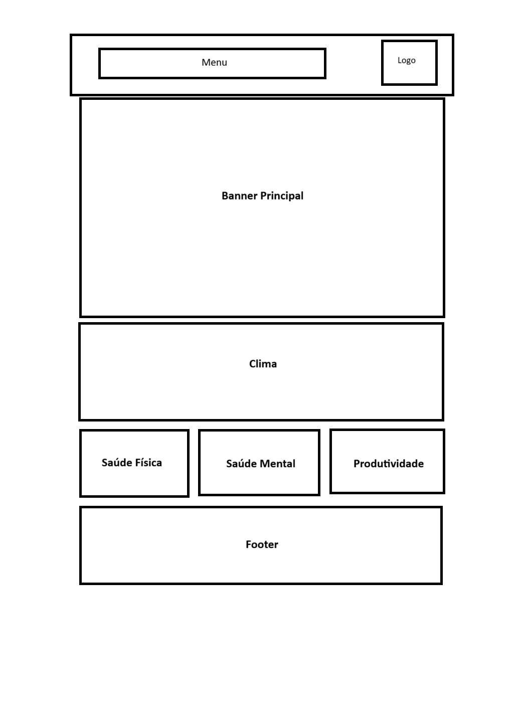
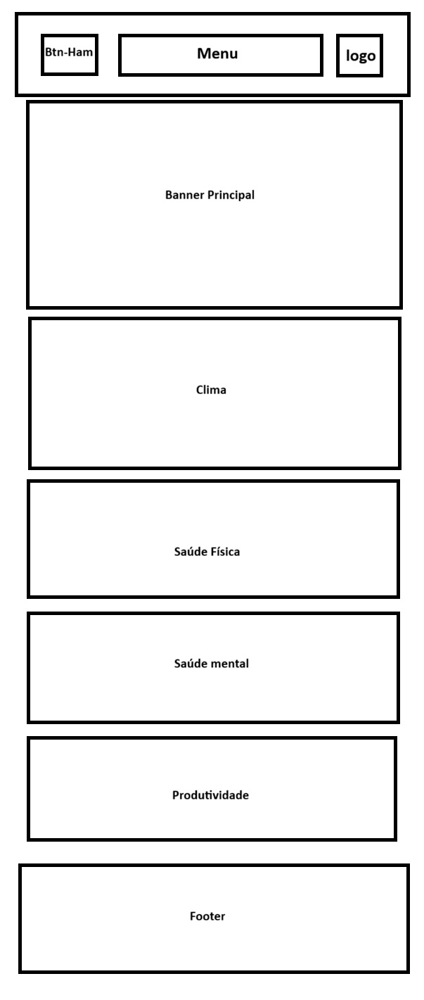

Conteúdo
Nome do Site:
Hábito+
Finalidade do Site:
O site Hábito+ tem como objetivo ajudar pessoas a desenvolverem bons hábitos de forma simples, prática e motivadora. Ele reúne informações, dicas e ferramentas que facilitam a criação de rotinas saudáveis relacionadas à saúde física, saúde mental e produtividade.
Cenários:
- O que geralmente motiva alguém a iniciar a construção de um novo hábito saudável — necessidade, inspiração ou insatisfação com a rotina atual?
- Quais obstáculos mais comuns fazem as pessoas desistirem antes que o hábito se consolide?
- Como o ambiente social (família, amigos, trabalho) influencia a capacidade de manter bons hábitos?
- Que estratégias práticas ajudam alguém a transformar um hábito desejado em uma rotina automática?
- Por que algumas pessoas conseguem manter hábitos por longo prazo enquanto outras os abandonam rapidamente?
Esquema de Cores:
- #191970 (azul‑escuro) Para o fundo do site.
- #FFFAF0 (branco‑amarelado) para cor da fonte.
- #FFF (branco) para cor de fundo de cards e botões.
- #000 (preto) para cor de fonte de cards e botões.
Tipografia:
Fonte: Nunito Sans, usar no conteúdo todo.
Fonte secundária: Roboto, usar em títulos e subtítulos.
Wireframe:
Para telas maiores:

Para telas menores:
